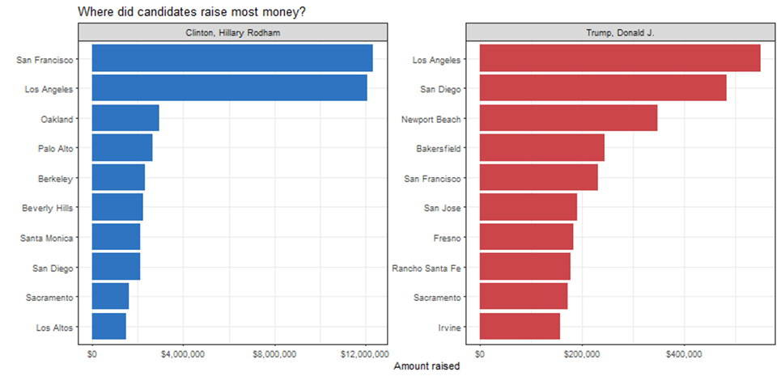
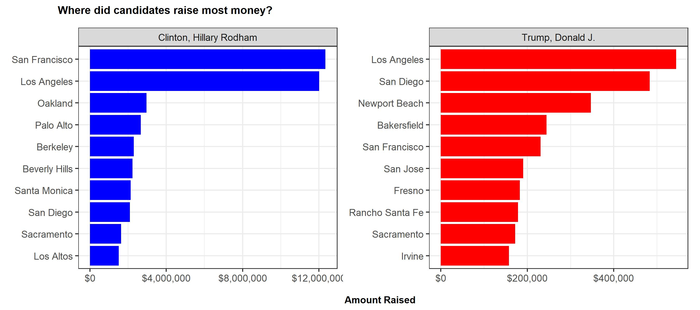
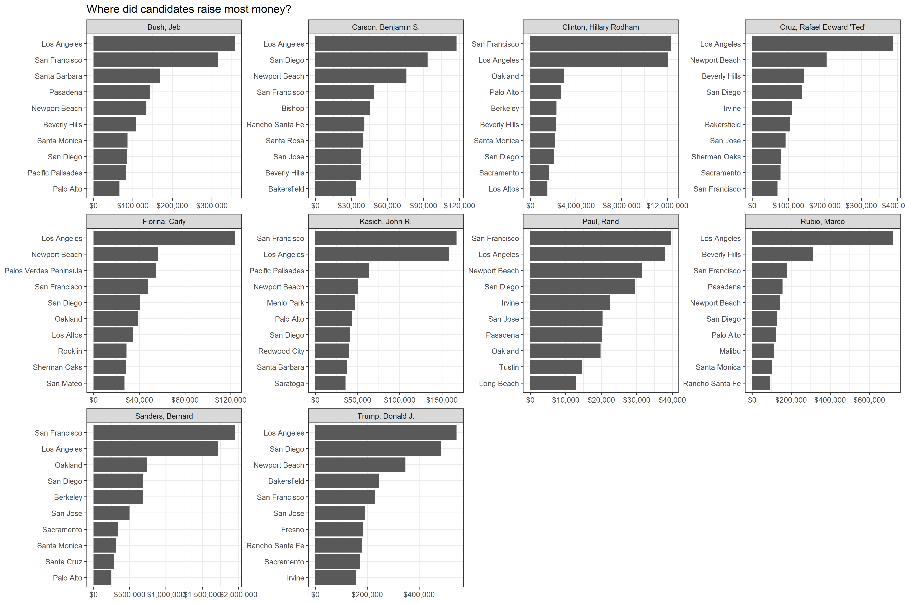

In this project, we learned how to reproduce the plot that shows the top ten cities in highest amounts raised in political contributions in California during the 2016 US Presidential election.

CA_contributors_2016 <- vroom::vroom(here::here("data","CA_contributors_2016.csv"))
zip_code <- vroom::vroom(here::here("data","zip_code_database.csv"))
#Assigning a numerical value to the zip code column of the database
zip_code <- zip_code %>%
mutate(zip = as.numeric(zip))
#Merging the two data frames
CA_contributors_2016 <- CA_contributors_2016 %>%
inner_join(zip_code, by = "zip")
#Cleaning the data frames in order to only have the variables we want to analyze
CA_contributors_2016_adapted <- CA_contributors_2016 %>%
group_by(cand_nm,primary_city) %>%
summarise(total_amt = sum(contb_receipt_amt)) %>%
select(candidate = cand_nm, city = primary_city, money_raised = total_amt)
# Plotting Hillary Clinton's top 10 contribution cities
clinton <- CA_contributors_2016_adapted %>%
filter(candidate == "Clinton, Hillary Rodham") %>%
top_n(10, wt = money_raised) %>%
ggplot(aes(x = money_raised, y = reorder(city, money_raised))) +
geom_col(fill = "blue") +
facet_grid(.~candidate) +
scale_x_continuous(label=dollar) +
theme_update(plot.title = element_text(hjust = 1)) +
theme(strip.background = element_rect(fill = "grey"),
stip.text = element_text(size = 10, color = "black")) +
labs(title = NULL, subtitile = NULL, x= NULL, y=NULL)+
theme_bw()
# Plotting Donald Trump's top 10 contribution cities
trump <- CA_contributors_2016_adapted %>%
filter(candidate == "Trump, Donald J.") %>%
top_n(10, wt = money_raised) %>%
ggplot(aes(x = money_raised, y = reorder(city, money_raised))) +
geom_col(fill = "red") +
facet_grid(.~candidate) +
scale_x_continuous(label=dollar) +
theme_update(plot.title = element_text(hjust = 1)) +
theme(strip.background = element_rect(fill = "grey"),
stip.text = element_text(size = 10, color = "black")) +
labs(title = NULL, subtitile = NULL, x= NULL, y=NULL)+
theme_bw()
# Combining the 2 graphs together and adding title
clinton_trump_top10 <- clinton + trump +
plot_annotation(title = "Where did candidates raise most money?", caption = "Amount Raised")
theme_update(plot.title = element_text(size = 10, hjust = 0.1, face = "bold"),
aspect.ratio = 9/4,
plot.caption = element_text(hjust = 0.55, vjust = 0.5, face = "bold"))
# Save the graph to then display it
ggsave("challenge_accepted.jpg", plot = clinton_trump_top10, width = 9, height = 4)
# Display groph
knitr::include_graphics("challenge_accepted.jpg")
In order to create the same plot for the top 10 candidates instead of just top 2, our codes are as follow:
# We need to by candidates and select the top 10
top_10_candidates <- CA_contributors_2016 %>%
group_by(cand_nm) %>%
summarize(contb_total_amt=sum(contb_receipt_amt)) %>%
top_n(10, contb_total_amt) %>%
arrange(desc(contb_total_amt))
# create a list for top 10 candidates' names
top_10_candidates <- top_10_candidates$cand_nm
# create the plot
plot_top_10 <- CA_contributors_2016_adapted %>%
group_by(candidate) %>%
filter(candidate %in% top_10_candidates) %>%
top_n(10, money_raised) %>%
ggplot(aes(x=money_raised,y=reorder_within(city,money_raised,candidate)))+
geom_col()+
scale_y_reordered()+
facet_wrap(~candidate,scales='free')+
labs(title ='Where did candidates raise most money?', x = NULL, y = NULL) +
scale_x_continuous(label=dollar) +
theme_bw()
# save the plot
ggsave("top10plot.png",plot=plot_top_10,width = 15,height = 10)
# show the plot
knitr::include_graphics("top10plot.png")